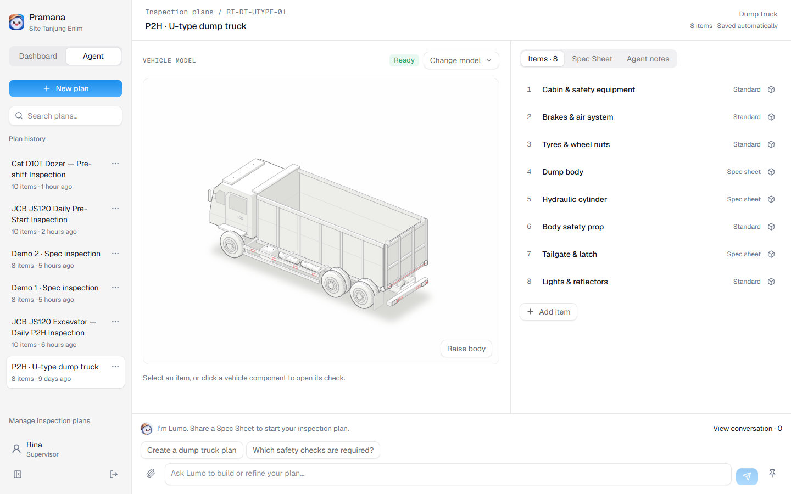

Inspections, surveys, and reporting
What if inspections,
surveys, and reporting
were supported by a
proactive AI agent?
An agent that prepares the right checks, asks for missing evidence, and keeps findings connected through follow-up.

Application screenshot